무선설비기사 (2001-06-03 기출문제)
1과목: 디지털 전자회로
1. 다음 회로에서 점선안의 회로를 부착해서 얻어지는 효과로 적당치 않은 것은?
- 증폭기의 대역폭을 넓힌다.
- 전류이득이 감소된다.
- 입력 임피이던스를 높인다.
- 출력 임피이던스를 높인다.
(정답률: 알수없음)

2. 중심 주파수가 455[㎑]이고 대역폭이 8[㎑]가 되는 단동조 회로를 만들려고 한다. 이 때 이 회로의 Q는 얼마가 되는가?
- 2.9
- 5.7
- 29
- 57
(정답률: 알수없음)
3. 그림(a) 회로에 그림(b)와 같은 전압을 입력측에 인가할 때 정상상태에서의 출력전압 Vo는?
- 3[V]의 진폭을 갖는 부(負)의 펄스
- 3[V]의 진폭을 갖는 정(正)의 펄스
- -6[V]의 직류전압
- +3[V]의 직류전압
(정답률: 알수없음)
4. 다음 회로에 대한 설명중 옳은 것은?
- 출력신호의 상단레벨을 일정하게 유지한다.
- 출력신호의 하단레벨을 일정하게 유지한다.
- 반파정류 회로이다.
- 클리퍼이며 일정값 이하로 출력신호의 크기를 제한한다.
(정답률: 알수없음)
5. 30:1의 리플계수기를 만들려면 최소한 몇 개의 플립-플롭(filp-flop)이 필요한가?
- 5개
- 10개
- 15개
- 30개
(정답률: 알수없음)
6. 그림과 같은 교류적 등가회로로 표시되는 발진회로의 발진주파수는?
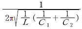
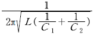
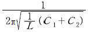
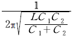
(정답률: 알수없음)
7. 그림의 복수 에미터 트랜지스터가 이루는 논리게이트는?
- T 2L
- DTL
- DCTL
- RTL
(정답률: 알수없음)
8. 증폭회로에서 증폭 대역폭을 4배로 하려면 증폭 이득을 몇[dB] 감소시켜야 하는가?
- 0.25 [dB]
- 4 [dB]
- 6 [dB]
- 12 [dB]
(정답률: 알수없음)
9. 다음 회로는 정류회로이다. 단자간에 가장 높은 전압이 나오는 단자는?
- AB
- CE
- BD
- AE
(정답률: 알수없음)
10. 모든 디지털 시스템에 클럭이 거의 필요한데 클럭의 요구조건 중 거리가 먼 것은?
- High 및 Low 레벨 전압이 안정할 것
- 상승 및 지연 시간이 장시간일 것
- 주파수가 안정할 것
- 수정발진기는 클럭의 요구조건을 잘 만족할 것
(정답률: 알수없음)
11. 다음 그림의 논리회로와 등가인 회로는?
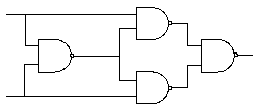
- Half adder
- full adder
- Exclusive OR
- Exclusive NOR
(정답률: 알수없음)
12. 주파수 변조(FM)에서 S/N비를 높이기 위한 방법으로 적당치 않은 것은?
- 변조지수 m를 크게 한다.
- 신호파의 진폭을 크게 한다.
- 주파수 대역폭을 크게 한다.
- pre-emphasis를 채용한다.
(정답률: 알수없음)
13. 다음 회로에서 콘덴서 C의 역할은?
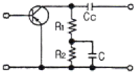
- 중화용
- 기생진동방지용
- peaking용
- 저주파특성 개선용
(정답률: 알수없음)
14. 그림과 같은 회로의 동작설명중 옳지 않은 말은?
- Tr1과 Tr2는 등가 pnp형 트랜지스터이다.
- 입력신호가 +이면 I1이 흐른다.
- 콤프리엔타리 다링톤 회로이다.
- 입력신호에 따라 I1과 I2가 교대로 흐른다.
(정답률: 알수없음)
15. 다음 부울대수(Boolean algebra)를 보수를 취하여 간단히 한 것은?
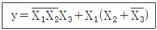
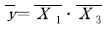
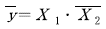
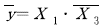
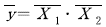
(정답률: 알수없음)
16. 아래 그림의 회로의 이름은? 문제 오류로 복원중입니다. 정확한 내용을 아시는 분께서는 오류신고를 통하여 내용 작성 부탁드립니다. 정답은 4번입니다.
- 동기 카운터(synchronous counter)
- 십진 카운터(binary counter)
- 업다운 카운터(up/down counter)
- 리플 카운터(ripple counter)
(정답률: 알수없음)
17. 차동증폭기에서 차동신호에 대한 전압이득은 Ad이고 동상신호에 대한 전압이득은 Ac이다. 이때 동상신호 제거비(CMRR)를 옳게 나타낸 식은?
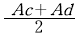
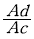
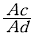
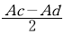
(정답률: 알수없음)
18. 논리함수가 다음과 같은 Karnaugn map으로 주어졌을 때 그 출력식으로 맞는 것은?
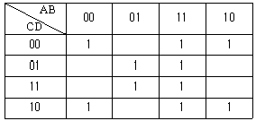
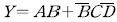
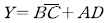
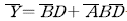
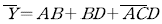
(정답률: 알수없음)
19. 비안정 멀티바이브레이터의 발진주기 T는? (단, K = 0.693이다)
- K(C1RC1+C2RC2)
- K(C1RB2+C2RB1)
- K(C1RC2+C2RC1)
- K(C1RB1+C2RB2)
(정답률: 알수없음)
20. 2n개의 입력신호 중 1개를 선택하여 출력하는 기능을 가진 회로는?
- Encoder
- Decoder
- Mux
- Demux
(정답률: 알수없음)
2과목: 무선통신 기기
21. CDMA에 관련된 사항이 아닌 것은?
- SCPC(Single Channel Per Carrier)
- 주파수도약(FH)
- Spread - Spectrum 기술
- 확산코드(Spreading Code)
(정답률: 알수없음)
22. 인가전압에 따라 용량이 변화하는 성질을 갖는 반도체는?
- 쇼트키 다이오드
- 포토 다이오드
- 터널 다이오드
- 바랙터 다이오드
(정답률: 알수없음)
23. 전계강도 측정기로 전계강도를 측정할 경우에 발생하기 쉬운 오차에 해당되지 않는 것은?
- 수직 안테나에 의한 오차
- 외부 잡음에 의한 오차
- 증폭기의 비직선성에 의한 오차
- 국부발진기의 주파수 변동에 의한 오차
(정답률: 알수없음)
24. 디지털 무선통신방식에서 클럭추출의 간이화 및 스펙트럼의 평활화를 위해 필요한 기능은?
- 스크램블. 디스크램블(Scramble, Descramble)
- 패턴지터(Systematic Jitter)
- 에러정정기(FEC)
- 위상동기 발진기(PLO)
(정답률: 알수없음)
25. 스퓨리어스(Spurious) 복사의 방지방법이 아닌 것은?
- 전력 증폭단의 여진전압을 높인다.
- 국부발진기의 출력에 포함된 고조파를 적게 한다.
- 동조회로의 Q를 높게 한다.
- 급전선에 트랩을 설치한다.
(정답률: 알수없음)
26. 대역폭인 10[㎑]인 슈퍼헤테로다인 수신기에서 1200[㎑]로 방송을 수신하고 있을 때 영상혼신 주파수는? (단, 중간주파수는 455[㎑] 이다.)
- 1210[㎑]
- 1655[㎑]
- 2110[㎑]
- 2855[㎑]
(정답률: 알수없음)
27. 마이크로웨이브(M/W)통신에서 수신한 M/W를 증폭하기 쉬운 주파수로 변환하여 충분한 증폭을 행한 후 다시 M/W로 변환하여 증폭하는 방식은?
- 무급전 중계방식
- 검파 중계방식
- 직접 중계방식
- 헤테로다인 중계방식
(정답률: 알수없음)
28. 다음중 위성통신 수신 증폭계에서 대표적인 저잡음 증폭기로 현재 많이 이용되고 있는 것은?
- GaAs FET
- Cascode
- Maser
- Magnetron
(정답률: 알수없음)
29. 무선 송신기의 송신 주파수 변동을 줄이기 위한 대책이 아닌 것은?
- 전원의 안정도를 높인다.
- 발진기와 출력 단 사이에 완충 증폭기를 넣는다.
- 발진기의 동조회로 Q가 낮은 부품을 사용한다.
- 발진기의 코일과 콘덴서의 온도계수를 상쇄하도록 부품을 선택한다.
(정답률: 알수없음)
30. AM 수신기에서 중간 주파수의 선정시 고려하여 결정해야 할 사항과 관계 적은 것은?
- 이득 및 안정도
- 지연특성
- 인입현상
- 초고주파의 방해
(정답률: 알수없음)
31. 초단파대 범위의 FM 송신기 전력측정에 가장 적당한 것은?
- CM형 방향성 결합기에 의한 방법
- 수부하에 의한 방법
- 열방사계에 의한 방법
- 전구의 조도에 의한 방법
(정답률: 알수없음)
32. 잡음지수에 대한 설명 중 틀린 것은?
- 무잡음 이상증폭기의 잡음지수는 1이다.
- 실제 증폭기의 잡음지수는 1보다 크다.
- 증폭기의 입.출력단에서의 잡음지수 =
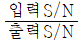
이다. - 다단 증폭기의 종합 잡음지수는 각단 잡음지수의 합이다.
(정답률: 알수없음)
33. 다음 중 무선 수신기의 전기적 측정시험이 아닌 것은?
- 안정도의 측정
- 충실도의 측정
- 변조도의 측정
- 감도의 측정
(정답률: 알수없음)
34. 어떤 직렬 공진 회로에서 가변 용량 C를 조정하여 L=400[ μH], R=20[Ω]일 때 800[㎑]의 주파수에서 공진되었다고 한다. 이 회로의 Q는 약 얼마인가?
- 100
- 150
- 200
- 250
(정답률: 알수없음)
35. 린콤팩스(LINCOMPEX. linked compressor and expander) 통신방식의 특징이 아닌 것은?
- 음성신호가 주파수변화 정보만으로 변환되어 전송되기 때문에 페이딩 영향이 적다.
- 압축기와 신장기를 이용하기 때문에 S/N이 향상된다.
- 음성신호를 압축하여 변조를 행하기 때문에 종합변조가 향상된다.
- 진폭변화 성분과 주파수성분은 페이딩 영향을 거의 받지 않기 때문에 다른 변환과정을 행할 필요가 없다.
(정답률: 알수없음)
36. SSB 송신기에서 상. 하측파대중 희망하는 측파대를 얻기 위해 사용하는 여파기는?
- 저역여파기
- 대역여파기
- 고역여파기
- 대역소거여파기
(정답률: 알수없음)
37. 송수신기의 발진방식으로 널리 사용되고 있는 방식중 PLL(Phase Locked Loop)은 외부로부터 입력되는 신호의 위상을 추적하여 안정된 위상관계를 유지하는 신호를 얻는 회로이다. 다음 중 PLL 회로구성에 필요한 회로는 어느 것인가?
- 전압제어발진회로
- 샘플링회로
- 주파수체배회로
- 적분회로
(정답률: 알수없음)
38. 282. sin 377t[V]로 표현되는 식에서 전압의 실효값과 주파수를 구하라.
- 전압실효값 220[V], 주파수 50[㎐]
- 전압실효값 110[V], 주파수 50[㎐]
- 전압실효값 200[V], 주파수 60[㎐]
- 전압실효값 100[V], 주파수 60[Hz]
(정답률: 알수없음)
39. 전계강도 측정에 관한 설명중 옳지 않는 것은?
- 전계강도 측정기는 내부 잡음에 의한 오차가 생길 수 있다.
- 전계강도는 송신기 출력의 제곱에 비례한다.
- 전계강도 측정시 주위에 전화선이나 배전선등이 있을 때는 정확한 측정이 곤란하다.
- 전계강도는 uV/m로 표시된다.
(정답률: 알수없음)
40. 저궤도 위성과 정지궤도 위성을 비교할 때 저궤도 위성의 장점에 해당하지 않는 것은?
- 안테나의 크기 감소
- 측위용 도플러 효과의 이용력
- 짧은 전파지연 시간
- 위성의 전력증가
(정답률: 알수없음)
3과목: 안테나 공학
41. 다음 중 루프(Loop) 안테나의 수평면내의 지향특성은? 복원중 (정확한 보기 내용을 아시는분께서는 오류 신고를 통하여 내용 작성부탁 드립니다. 정답은 1번입니다.)
- 복원중 (정확한 보기 내용을 아시는분께서는 오류 신고를 통하여 내용 작성부탁 드립니다. 정답은 1번입니다.)
- 복원중 (정확한 보기 내용을 아시는분께서는 오류 신고를 통하여 내용 작성부탁 드립니다. 정답은 1번입니다.)
- 복원중 (정확한 보기 내용을 아시는분께서는 오류 신고를 통하여 내용 작성부탁 드립니다. 정답은 1번입니다.)
- 복원중 (정확한 보기 내용을 아시는분께서는 오류 신고를 통하여 내용 작성부탁 드립니다. 정답은 1번입니다.)
(정답률: 알수없음)
42. 다음중 진행파와 반사파가 있는 급전선은?
- 무한장 급전선
- SWR = 1인 급전선
- 정규화 부하 임피이던스가 1인 급전선
- 반사계수가 1인 급전선
(정답률: 알수없음)
43. Beam antenna는 수개의 반파장 안테나를 동일 평면내에 규칙적으로 배치하는데 일반적인 배열 간격은?
- λ
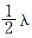
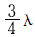
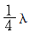
(정답률: 알수없음)
44. 다음 중 정재파(Standing wave) 안테나에 해당되는 것은?
- 롬빅(Rhombic) 안테나
- V형(Progressive wave V-type) 안테나
- 비버리지(Beverage) 안테나
- 야기(Yagi) 안테나
(정답률: 알수없음)
45. 주파수가 다른 2개의 전파가 같은 전리층의 1점을 두 전파가 지나갈 때 복사전력이 강한쪽의 전파에 의하여 다른 쪽의 전파가 변조되어 강한쪽의 전파가 혼입되는 현상을 무엇이라 하는가?
- luxemburg effect
- control point
- antipode effect
- magnetic storm
(정답률: 알수없음)
46. 다음 중 고조파 안테나에 대한 설명으로 옳은 것은?
- 고조파의 차수가 커질수록 부엽이 적어진다.
- 고조파의 차수가 작을수록 복사임피던스는 증가한다.
- 단파용의 진행파 안테나이다.
- 정재파 V형 안테나를 구성할 수 있다.
(정답률: 알수없음)
47. 다음 중 라디오 덕트에 대한 설명으로 옳은 것은?
- 고정통신에 사용할 수 없다.
- 도파관과 같이 차단주파수 이하의 전파만을 통과시킨다.
- 일반적으로 큰 감쇠없이 원거리 통신도 가능하므로 안정성이 있다.
- 기상상태의 변화에 기인하지 않고 자주 발생한다.
(정답률: 알수없음)
48. 전파투시도(profile map)에 관한 설명으로 적합하지 않은 것은?
- 전파통로상에서 수평방향의 장애물을 탐색할 때
- 전파통로는 직선으로 계산한다.
- 등가지구 반영계수를 고려해서 그린다.
- 송수신점을 포함한 대지에 수직인 지형 단면도이다.
(정답률: 알수없음)
49. 역 L형 안타네의 수평부분의 기능 중 틀린 것은?
- top loading의 일종이다.
- 수신전압을 최대로 유기시킨다.
- 안테나의 대지용량을 증가시킨다.
- 안테나의 실효고를 크게 한다.
(정답률: 알수없음)
50. 복사 저항이 50[Ω]이고, 손실 저항이 10[Ω]인 안테나에 200[W]의 전력이 공급되고 있다면 이 안테나의 복사 전력은 몇[W]인가?
- 66.67 [W]
- 96.67 [W]
- 166.67 [W]
- 196.67 [W]
(정답률: 알수없음)
51. 안테나의 급전선(도파관)에 스터브(stub)를 다는 이유는?
- 복사전력을 증폭시키기 위하여
- 안테나의 지향성을 높이기 위하여
- 안테나의 리액턴스 성분을 제거하여 임피던스를 정합시키기 위하여
- 안테나의 서셉턴스 성분을 제거하여 대역폭을 증가시키기 위하여
(정답률: 알수없음)
52. 다음중 지표파의 진행에 가장 손실이 적은 지역은?
- 해면이나 수면
- 시가지
- 산악지역
- 사막지대
(정답률: 알수없음)
53. 미소 다이폴의 수평면내 지향성 계수는 얼마인가?
- 1
- 0
- 2
- 0.5
(정답률: 알수없음)
54. 주파수 30[㎒]의 전파에 대한 1/4파장은 몇[m]인가?
- 1.5[m]
- 2.5[m]
- 3.5[m]
- 4.5[m]
(정답률: 알수없음)
55. 위성 통신용으로 사용하는 마이크로파용 안테나로 적당하지 않은 것은?
- horn reflector antenna
- slot antenna
- carabola antenna
- cassegrain antenna
(정답률: 알수없음)
56. 중위도 지방(한국)에서는 태양폭발이 관측된 후 얼마후에 자기람이 발생되는가?
- 수분후
- 수십분후
- 수시간~수십시간후
- 수일후
(정답률: 알수없음)
57. 파라보라 안테나(Parabola antenna)의 특성중 옳지 않은 것은?
- 이득은 안테나의 개구면적에 비례한다.
- 같은 크기에서는 파장이 많을수록 이득은 크다.
- 지향성은 예민하나 방향조정은 잘 안된다.
- 반사면을 망으로 하거나 도전도료를 칠하여도 특성에는 커다란 변동은 없다.
(정답률: 알수없음)
58. 대수주기 안테나의 가장 큰 특징은?
- 구조가 간단하다.
- 적은 소자로 큰 이득을 얻을수 있다.
- 주파수 대역이 아주 넓다.
- 지향성을 전자적으로 가변할 수 있다.
(정답률: 알수없음)
59. 대기의 작은 기단군(氣團群), 난류 등에 의해 초가시거리 전파에서 가장 심하게 수반하는 페이딩(fading)은?
- 감쇠형
- K형
- 신틸레이션형
- 산란파형
(정답률: 알수없음)
60. 반파장 다이폴 안테나에서 100[W]가 복사될 때 100[km]떨어진 점에서의 전계강도는?
- 0.7×10-3[V/m]
- 15×10-3[V/m]
- 0.15×10-3[V/m]
- 0.07×10-3[V/m]
(정답률: 알수없음)
4과목: 무선통신 시스템
61. 마이크로 웨이브 기계시설 설계시 작성해야할 도면에 해당되지 않는 것은?
- 케이블 포설도
- 철탑 시설도
- 접지선 포설도
- 공조시설 배치도
(정답률: 알수없음)
62. 2단 증폭기에서 초단의 잡음지수 F1=10, 이득 G1=10이고, 다음 단의 잡음지수 F2=11 일 때 이 증폭기의 종합잡음지수는 얼마인가?
- 10
- 11
- 15
- 21
(정답률: 알수없음)
63. 지구국에서 위성에 전파를 발사한 후 되돌아오는 반사파로부터 지연(delay)을 계산해 sync를 거는 망동기방식은?
- open loop control 방식
- close loop control 방식
- local loop control 방식
- remote loop control 방식
(정답률: 알수없음)
64. SSB 통신방식은 DSB 통식방식에 비교하여 많은 장점이 있다. 다음에서 SSB 방식의 장점이 아닌것은?
- 회로가 간단하여 유지보수가 간편하다.
- 신호대 잡음비가 좋아진다.
- 증폭기의 출력을 감소시킬 수 있다.
- 비화성을 갖는다.
(정답률: 알수없음)
65. 중단 전력 증폭기에서 자기 발진을 할 때, 이것을 제거하기 위해 필요한 조치는?
- 변조 입력을 적게 한다.
- 중화회로를 사용한다.
- 부동조 회로를 약간 이조한다.
- 증폭기의 바이어스 전압을 변경시킨다.
(정답률: 알수없음)
66. 정지위성을 중계국으로 하는 지구국의 설비는 안테나와 통신장치가 필요하다. 이때 이들 기기들을 배치하는 방식은 신호의 전송형식으로부터 분류되는데 다음 중 틀린 것은?
- 베이스밴드 전송방식
- 간접 결합방식
- 마이크로파 전송방식
- IF 전송방식
(정답률: 알수없음)
67. 진폭 10[V], 주파수 1000[㎑]의 반송파를 진폭 5[V], 주파수 5[㎑]인 변조신호로 최대주파수 편이 12[㎑]를 갖게 FM변조한 피변조파가 있다. 이 피변조파에 포함된 제3측대파의 진폭과 주파수는 얼마인가? (단, 제3측파대의 Bessel 함수의 계수는 0.3이다.)
- 1.0, 5000±12[㎑]
- 1.5, 1000±15[㎑]
- 2, 5000±12[㎑]
- 3, 1000±15[㎑]
(정답률: 알수없음)
68. 주파수 금융통신(TRS) 특징중 틀린 것은?
- 원하는 시간에 항상 통화가 가능하다.
- 통화 누설이 있어 통신비밀 유지에 적합치 않다.
- 넓은 지역까지 통화가 가능하다.
- 잡음과 혼신이 없는 양호한 통화품질을 유지한다.
(정답률: 알수없음)
69. 마이크로파 통신방식의 일반적인 특징이 아닌 것은?
- 대기중 전파손실이 적다.
- 전리층 반사파를 이용한다.
- 가시거리내 전파에 한한다.
- 신호대 잡음비(S/N)가 개선된다.
(정답률: 알수없음)
70. 공중 이동통신에서 일반적으로 이동무선구간을 고정전화망과 접속하여 여러 가지의 유형으로 사용하는데 이 중 해당되지 않는 방법은?
- 가입자 회선의 로켓 단자에 직접 접속하는 것으로 코드없는 전화기와 같은 유형임.
- 교정 전화망의 시외 교환기와 이동통신 제어국을 연결하는 방안
- 고정 전화망의 중계 교환기와 이동 통신 제어국을 연결하는 방안
- PBX와 유사한 형태로 PBX에 상당하는 이동통신 제어국을 가입자선 교환기에 접속하는 방안
(정답률: 알수없음)
71. 디지털 셀룰러시스템의 다중화방식에 속하지 않는 것은?
- NTACS
- ETDMA
- TDMA
- CDMA
(정답률: 알수없음)
72. 주파수금융방식(trunked radio system)과 일반전화망과의 차이점이 아닌 것은?
- 주로 어떤 집단에 소속된 여러 가입자가 함께 통화하는 그룹 호출(call)형태이다.
- 통화시간이 보통 짧다. (1분 통화로 제한)
- 서비스구역은 cellular 방식의 소구역화로 한다.
- press to talk 방식에 의한 상호통신이다.
(정답률: 알수없음)
73. 위성통신 업무에 속하지 않는 것은?
- 고정위성업무
- 이동위성업무
- 방송위성업무
- 영상위성업무
(정답률: 알수없음)
74. AM 수신기에서 1000[㎑]의 방송을 수신하는데 1,010[㎑]의 방해신호가 혼신하고 있다면 이조도는?
- 1 [%]
- 10[%]
- 50[%]
- 100[%]
(정답률: 알수없음)
75. 위성통신을 하기 위해서는 여러 가지 방식이 있는데 다음 중 제안된 방식에 해당하지 않는 것은?
- 이동위성방식
- 랜덤위성방식
- 위상위성방식
- 정지위성방식
(정답률: 알수없음)
76. SSB 통신 방식에 대한 설명으로 관계가 없는 것은?
- 선택성 페이딩의 영향이 적다.
- 링변조로 반송파를 제거한다.
- 링변조기를 역으로 사용하면 복조기로 사용할 수 있다.
- 송신 발사전파는 상. 하측파대를 모두 내포하고 있다.
(정답률: 알수없음)
77. FM 방식을 AM 방식에 비교할 경우 틀리는 것은?
- 레벨변동이 없다.
- S/N비가 개선된다.
- 미약한 신호의 수신에 적합하다.
- 초단파대 통신에 적합하다.
(정답률: 알수없음)
78. 위성통신 서비스와 위성중계기의 다원접속(Multiple Access)이 가장 이상적으로 짝을 이룬 것은?
- VSAT - ALOHA(RMA)
- DBS - CDMA
- PCN - TWTA
- IBS - SCPC
(정답률: 알수없음)
79. 자유공간의 고유 임피이던스 값 중에 잘못된 것은?
- 377[Ω]
- 120π[Ω]
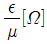
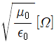
(정답률: 알수없음)
80. 송신기에서 발사되는 고조파의 방사를 적게 하기 위해서는 어떤 방법을 강구해야 하는가?
- 송신기 중단동조회로의 Q를 될 수 있는 대로 낮게 한다.
- 송신기 중단과 공중선 사이에 결합회로를 설치한다.
- 송신기 중단과 공중선 사이에 저조파 여파기를 삽입한다.
- 저조파에 대한 트랩을 급전선에 설치한다.
(정답률: 알수없음)
5과목: 전자계산기 일반 및 무선설비기준
81. 데이터의 표현단위를 비트 수의 크기의 순서로 나열한 것은?
- 비트 - 니블 - 바이트 - 워드 - 필드 - 레코드 - 파일
- 비트 - 니블 - 바이트 - 워드 - 레코드 - 필드 - 파일
- 비트 - 니블 - 바이트 - 워드 - 레코드 - 파일 - 필드
- 비트 - 니블 - 바이트 - 레코드 - 워드 - 필드 - 파일
(정답률: 알수없음)
82. 제어장치를 구성하는 요소가 아닌 것은?
- 제어 신호 발생기
- 명령 레지스터
- 명령 계수기
- 누산기
(정답률: 알수없음)
83. 4개의 비트(bit)에서 MSB로부터 차례로 3,4,2,1 웨이트(weight)를 갖는 코드는?
- BCD 코드
- ACCESS 3 코드
- ASCII 코드
- Hamming 코드
(정답률: 알수없음)
84. 다음은 중앙처리장치 내의 하드웨어요소와 그 기능을 짝지은 것이다. 서로 맞지 않는 것은?
- Register - 기억장치
- Accumulator - 제어기능
- ALU - 연산기능
- Internal bus - 전달기능
(정답률: 알수없음)
85. 형식검정을 하고자 할 때에 다음중 누구에게 신청서를 제출하여야 하는가?
- 전파연구소장
- 지방자치단체장
- 체신청장
- 정보통신부장관
(정답률: 알수없음)
86. 포인터에 대한 설명중 옳지 않은 것은?
- 포인터는 간결하게 프로그래밍을 할 수 있다.
- 액세스(access)하기 전에 포인터의 값이 주어져야 한다.
- 포인터는 연산속도를 빠르게 해준다.
- Call by Name은 포인터에 의해서 처리된다.
(정답률: 알수없음)
87. 형식검정을 받고자 하는 기기와 합격기준에 적합하다고 인정하는 때는 '인증서'를 신청인에게 교부하고 관보에 고시하여야 한다. 고시내용이 아닌 것은?
- 형식기호
- 기기의 명칭, 모델명
- 인증년월일
- 형식검정 확인자 성명
(정답률: 알수없음)
88. 일정한 시간 간격으로 발생된 신호에 따라 각 부분의 동작을 규칙적으로 제어하는 방식은?
- 비 주기식 제어 방식
- 비 동기식 제어 방식
- 동기식 제어 방식
- 랜덤 제어 방식
(정답률: 알수없음)
89. 수신설비의 성능을 위한 충족 조건과 관계가 적은 것은?
- 선택도가 클 것
- 명료도가 충분할 것
- 정합이 적정할 것
- 내부잡음이 적을 것
(정답률: 알수없음)
90. 다음 1/0 맵 입출력에 대해 가장 잘 설명한 것은?
- 입출력 포트를 다루기 위한 주소가 따로 있다.
- 입출력 포트는 기억장소와 똑같은 메모리이다.
- 메모리의 데이터에 대한 명령과 같은 명령을 입출력 포트에 대해서 실행할 수 있다.
- 입출력 포트를 다루기 위한 명령어가 따로 없다.
(정답률: 알수없음)
91. 전파연구소장은 특별한 사유가 없는 한 전자파 적합등록 신청서를 받은 날로부터 며칠 이내에 처리하여 하는가?
- 3일
- 5일
- 10일
- 25일
(정답률: 알수없음)
92. 기본주파수 17.7[㎓]를 초과하는 무선설비의 스퓨리어스 발사의 허용값은?
- 기본주파수의 평균전력보다 20[㏈] 낮은 값
- 기본주파수의 평균전력보다 40[㏈] 낮은 값
- 기본주파수의 평균전력보다 60[㏈] 낮은 값
- 기본주파수의 평균전력보다 80[㏈] 낮은 값
(정답률: 알수없음)
93. 주 반송파를 변조시키는 신호의 특성표시 중 아날로그 정보를 포함하는 2이상의 채널을 나타내는 것은?
- 2
- 5
- 7
- 8
(정답률: 알수없음)
94. CPU와 주변장치의 인터페이스에서 읽기, 쓰기, 인터럽트 요청 등에 사용하는 버스는?
- 입출력 버스
- 주소 버스
- 데이터 버스
- 제어 버스
(정답률: 알수없음)
95. 허가 유효기간이 1년인 무선국의 재허가 신청은 허가 유효기간 만료 얼마전에 해야 하는가?
- 1월
- 2월
- 3월
- 4월
(정답률: 알수없음)
96. 부동소수점 연산에서 정규화(normalize) 시키는 이유는?
- 숫자표시를 간결하게 하기 위하여
- 연산속도를 증가시키기 위하여
- 유효숫자를 늘리기 위하여
- 수치계산을 편리하게 하기 위하여
(정답률: 알수없음)
97. 지정된 공중선 전력을 500[W]로 하고 허용편차를 상한 5%, 하한 10%라 할 때 공중선 전력의 허용 편차의 값은?
- 하한 450[W]에서 상한 525[W] 까지
- 하한 475[W]에서 상한 525[W] 까지
- 하한 475[W]에서 상한 550[W] 까지
- 하한 450[W]에서 상한 550[W] 까지
(정답률: 알수없음)
98. 컴퓨터의 자원을 효율적으로 관리하고 운영하는 일련의 소프트웨어의 총합을 무엇이라 하나?
- 운영체제
- 모니터
- 기계어
- 컴파일러
(정답률: 알수없음)
99. 수신설비로부터 부차적으로 발사되는 전파의 세기는 수신 공중선과 전기적상수가 같은 의사공중선 회로를 사용하여 측정한 경우 몇 데시벨 밀리와트(dBmW) 이하이어야 하는가?
- 10
- 34
- -27
- -54
(정답률: 알수없음)
100. 다음 전파형식의 표시중 기호가 맞지 않는 것은?
- 주파수 변조 : F
- 진폭변조된 양측파대 : A
- 진폭변도된 잔류측파대 : B
- 진폭변조된 단측파대의 억압반송파 : J
(정답률: 알수없음)
이유: 점선안의 회로는 전압 분배기로 작용하여 출력 임피던스를 높입니다. 이는 출력 신호가 부하에 전달될 때 신호의 감쇠를 줄이고, 전압의 안정성을 높이는 효과가 있습니다. 그러나 이는 증폭기의 대역폭을 좁히고, 전았이득을 감소시키며, 입력 임피던스를 낮추는 부작용이 있을 수 있습니다. 따라서 이 회로를 사용할 때는 이러한 부작용을 고려하여 적절한 설계가 필요합니다.